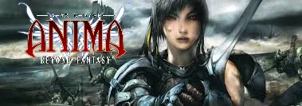

Anima: Beyond Fantasy es un universo de fantasía oscura donde convergen la estética del anime japonés y la épica de la tradición occidental. Su núcleo narrativo se sustenta en el conflicto entre la tecnología olvidada, los mitos primordiales y las organizaciones que luchan por el control de la esencia misma del mundo: el Gaia. El sistema destaca por una profundidad técnica exhaustiva, permitiendo una personalización absoluta de personajes a través de disciplinas diferenciadas como la Magia, el Ki, la Psiónica y la Invocación. No se limita a un despliegue de poder, sino que profundiza en la tragedia de una humanidad atrapada entre el resurgir de entidades divinas y la rigidez de instituciones que temen lo sobrenatural.